Introduction
This is the website for the final presentation of Information Science and Cultural Heritage exam within the master’s degree in Digital Humanities and Digital Knowledge at University of Bologna.
The project is about the Coronation of Charlemagne event, happened on the 25th of December in 800 AD. This event is widely described in the Wikipedia page of Charlemagne, in particular in the section Coronation. Starting from reading this page, I have identified 11 items of different nature (people, places, literary works, artistic objects) connected with this famous historical event. I selected the entities I believed are highly significant because they offer diverse perspectives on the event and allow us to explore historical debates surrounding it.
The final gaol was to create a graph of knowledge where these different entities are linked together, using the semantic web technologies.
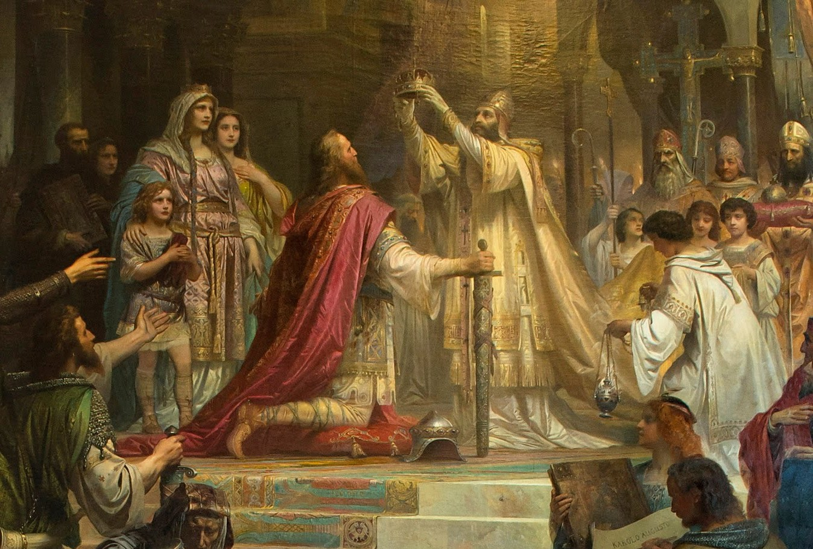
Items
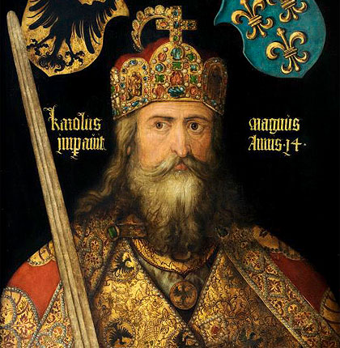
Charlemagne
Charlemagne is one of the most renowned figures of the Middle Ages. He was King of the Franks, King of the Lombards, and, following his coronation in 800, Emperor of the Holy Roman Empire.
He is remembered both for his military campaigns, including his wars against the Saxons, the Lombards, and the Arabs, and for the cultural revival that flourished under his reign, known as the Carolingian Renaissance. This period saw the establishment of the Palace School, the development of the Carolingian minuscule script, and the revival of interest in classical texts.
His fame endured long after his death, and he became a legendary figure in medieval tradition. One notable example is the Carolingian cycle of the Chansons de Geste, which features Charlemagne and his knights as its central heroes.
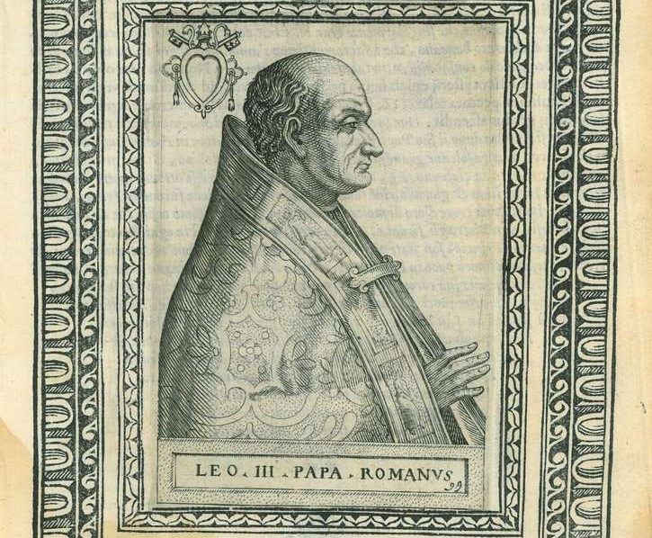
Pope Leo III
Pope Leo III served as head of the Catholic Church from 795 until his death. He played a crucial role in the rise of Charlemagne, as his actions helped legitimize the ruler’s authority. For example, Leo III affirmed Charlemagne’s position as King of the Franks by presenting him with the keys to the Tomb of Saint Peter, which symbolized the king’s role as protector of the Christian faith.
On Christmas Day in 800, Pope Leo III crowned Charlemagne Emperor of the Romans. This event gave rise to a long-standing debate over the relationship between the pope and the emperor. On the one hand, the act of coronation could be interpreted as demonstrating that only the pope possessed the authority to legitimize the ruler’s power. On the other hand, the coronation also implied that the emperor assumed a leading role in the internal affairs of the Church.
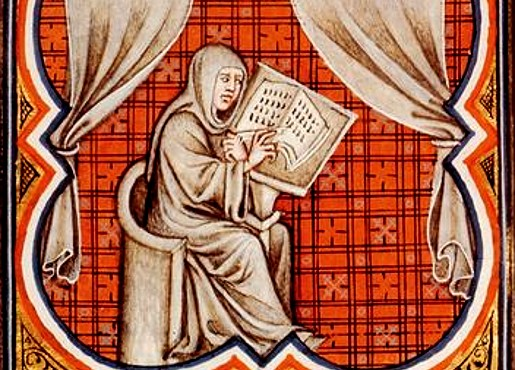
Einhard
Einhard was a Frankish historian and architect. He served Charlemagne and his son Louis the Pious. He was a key figure of the Carolingian Renaissance and is best remembered as Charlemagne's biographer, thanks to his work Vita Karoli Magni.
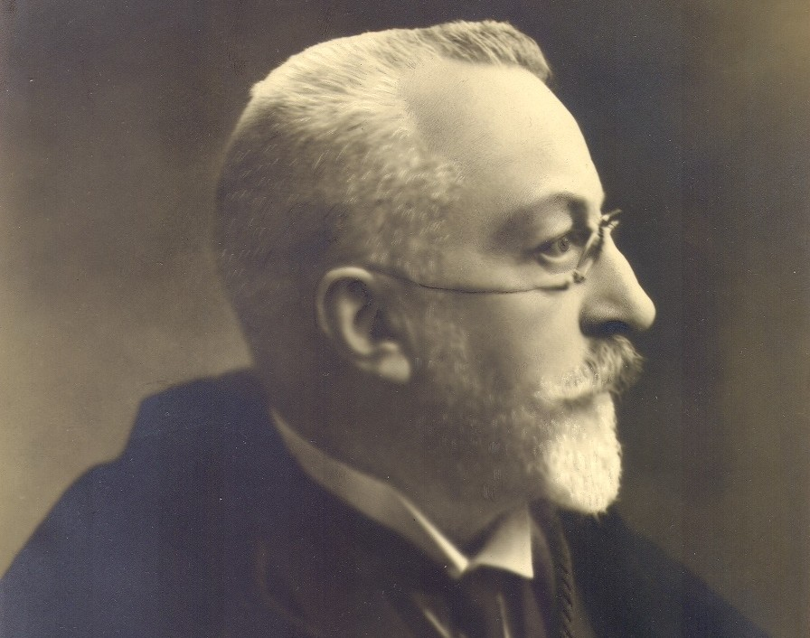
Henri Pirenne
Henri Pirenne was a Belgian historian regarded as one of the most influential and innovative scholars of the Middle Ages in the twentieth century.
He devoted much of his research to the figure of Charlemagne and, in his book Mohammed and Charlemagne, put forward what became known as the Pirenne Thesis.
According to Pirenne, “without Islam, the Frankish Empire would perhaps never have existed, and without Muhammad, Charlemagne would be inconceivable.”
With this thesis, Pirenne challenged the traditional view that the fall of the Roman Empire marked the beginning of the Middle Ages. Instead, he argued that the true break with the ancient world was the Arab expansion of the seventh century. This expansion caused Western Europe to sever its long-standing economic ties with the regions corresponding to southeastern Turkey, Syria, Palestine, North Africa, Spain, and Portugal. According to Pirenne, this rupture paved the way for Charlemagne’s rise in the eighth century and transformed Europe into a society with an economy based almost entirely on agriculture and subsistence, largely disconnected from long-distance trade.
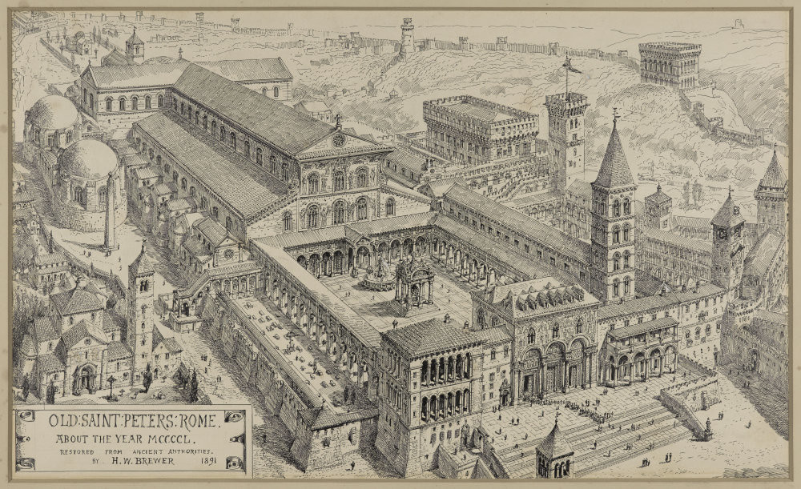
Old St. Peter's Basilica
Old St. Peter's Basilica consisted of the church buildings that stood, from the 4th to 16th centuries, where St. Peter's Basilica stands today in Vatican City. The name "old St. Peter's Basilica" has been used since the construction of the current basilica to distinguish the two buildings.
Papal coronations were held at the basilica, and in 800, Charlemagne was crowned emperor of the Carolingian Empire there.
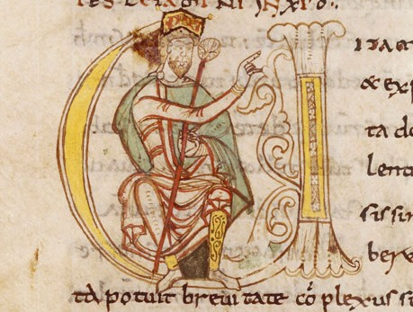
Vita Karoli Magni
The Vita et gesta Caroli Magni (also known as the Vita Karoli) is the biography of Charlemagne written by Einhard.
It is one of the contemporary sources that records the event of Charlemagne’s coronation. Historians have closely studied and interpreted this work because its account differs in several respects from those found in other contemporary sources.
For example, Einhard writes that Charlemagne would not have entered the church if he knew about the pope's plan; however, many modern historians have regarded this testimony as unreliable, considering it a literary device intended to emphasize Charlemagne’s humility.
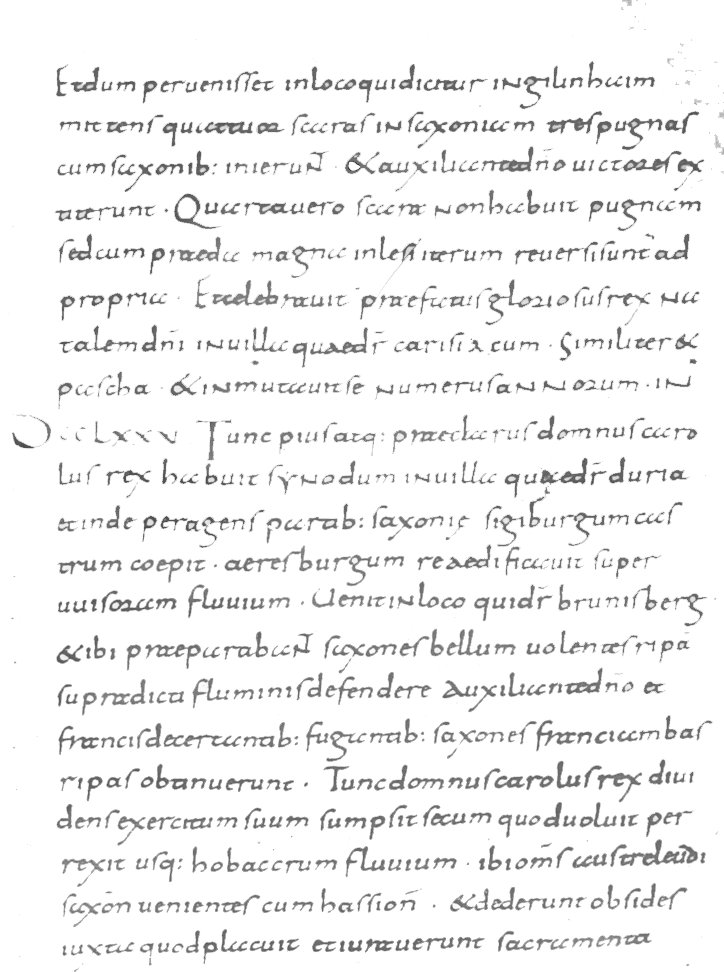
Annales Laureshamenses
The Annales laureshamenses, also known as the Annals of Lorsch, are a collection of Reichsannalen (annals of the Frankish Empire) covering the years 703 to 803.
They provide another contemporary source for the coronation of Charlemagne, offering an additional interpretation of the event. According to the Annals of Lorsch, the presence of a female ruler (Irene of Athens) on the throne of Constantinople was regarded as creating a vacancy in the imperial office. This was used to justify Pope Leo III’s coronation of Charlemagne as emperor.
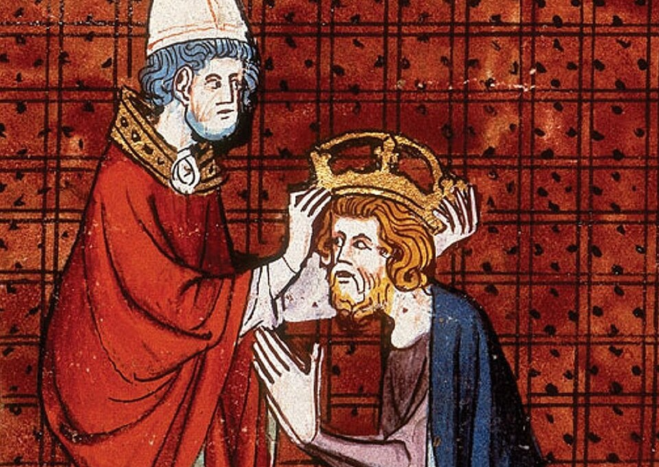
Grandes Chroniques de France
The Grandes Chroniques de France are a valuable medieval chronicle recounting the history of the Kingdom of France. The Grandes Chroniques trace the origins of the Franks from their legendary Trojan ancestor to Clovis, then cover the Merovingian period and the Carolingian and Capetian dynasties up to the year 1461.
Many manuscripts of this work are richly illustrated with high-quality miniatures. One of the most notable depicts the coronation of Charlemagne
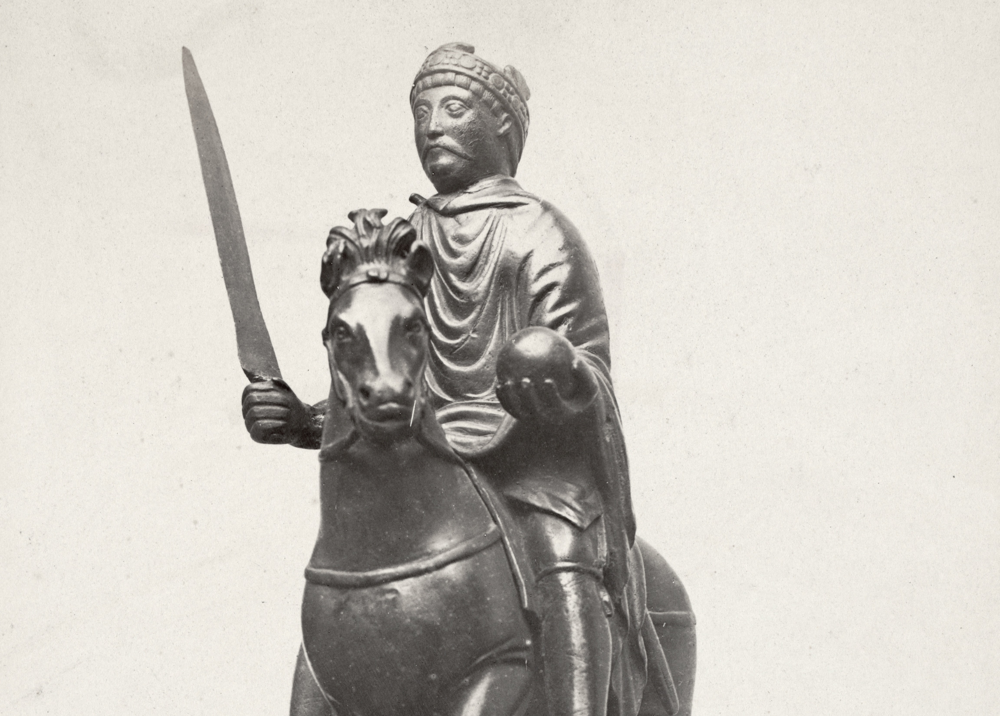
Equestrian Statuette of Charlemagne
The Carolingian equestrian statuette depicting either Charlemagne or his grandson Charles the Bald is a rare surviving example of Carolingian metal sculpture.
This statuette is particularly significant because it illustrates a change in the iconography of kingship that took place with the transition from the Merovingian to the Carolingian dynasty, to which Charlemagne belonged. The Merovingians were known as the reges criniti (“long-haired kings”) and believed that their long hair was a symbol of royal authority and masculine strength. The historian Paul Dutton notes that this emblem of kingship, represented by the long hair in Merovingian portraits, was replaced in depictions of Charlemagne and other Carolingian rulers by the crown, which became the new visual symbol of royal authority.
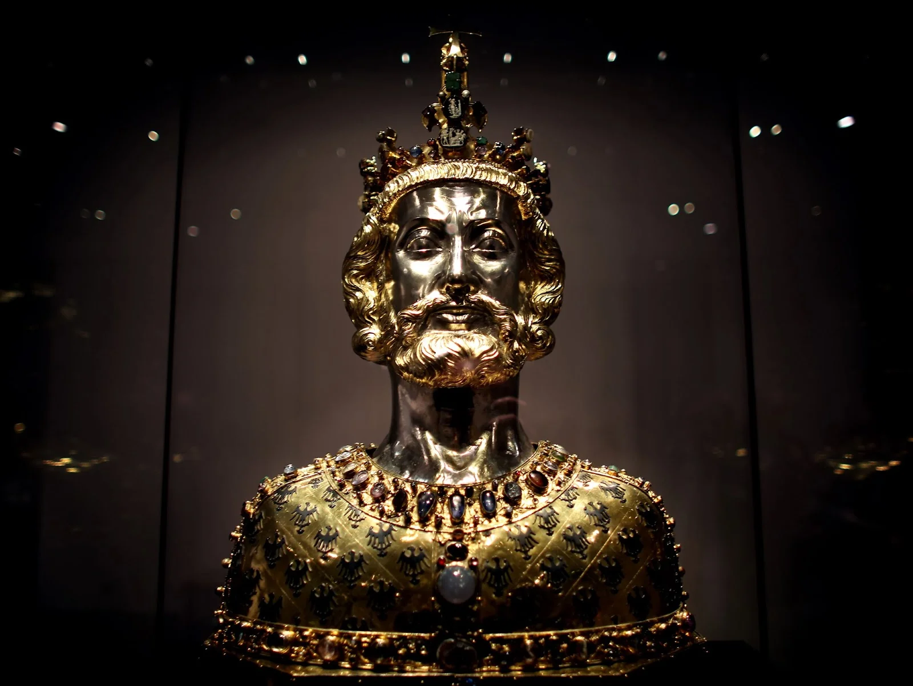
Bust of Charlemagne
The Bust of Charlemagne is a reliquary dating to around 1350 that contains the upper part of Charlemagne’s skull. It forms part of the treasury of Aachen Cathedral.
Like the equestrian statuette, this bust provides evidence of the transformation in the iconography of kingship that accompanied the transition from the Merovingian to the Carolingian dynasty.
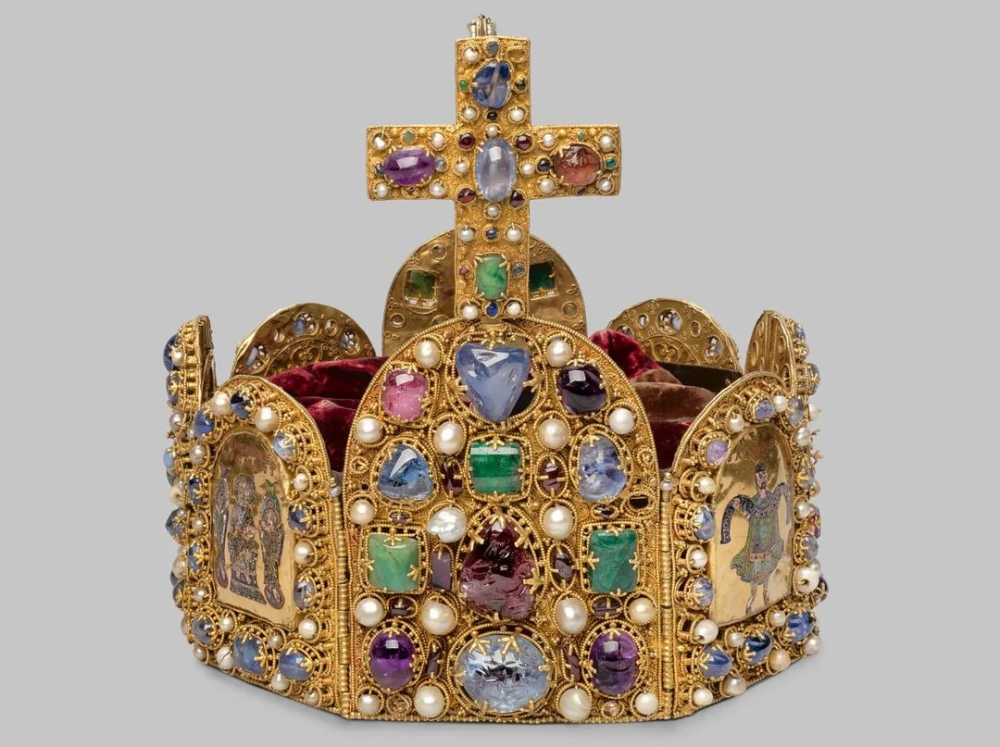
Imperial Crown
The Imperial Crown of the Holy Roman Empire is a hoop crown with a characteristic octagonal shape. It was the coronation crown of the Holy Roman Emperor, probably from the late 10th century until the dissolution of the Holy Roman Empire in 1806. It is now kept in the Imperial Treasury at the Hofburg in Vienna, Austria.
Although this is not the actual crown used for Charlemagne's coronation, it remains the extant object that best represents the original, as both embody the symbol of the Holy Roman Emperor's power.
Theoretical Model
After identifying the 11 entities, I attempted to establish a theoretical model capable of representing the relationships between them, significant metadata for each entity, and connections to authoritative sources.
Regarding the relationships between the entities and the central event, you can refer to the chart below.
As for the metadata for each entity, I have decided to include the following for each category:
- People: name, date of birth, date of death, honorary title, profession;
- Places: name, country of location, artistic period of construction;
- Literary Works: title, author, publication date, subject matter, language, text type;
- Artistic Objects: name, artistic period of production, material, preservation location, subject matter;
Finally, I selected VIAF and Wikidata as authoritative sources to link the items mentioned on the page.
.png)
Conceptual Model
After devoloping the Theoretical Model, I developed a formal representation of it through a Conceptual Model which reuses existing ontologies to define the relations and the metadata of my items.
The ontologies I reused are:
- Schema.org: a shared, standardized vocabulary created by major search engines (Google, Microsoft, Yahoo, and Yandex);
- Friend of a Friend: useful for describing persons, their activities and their relations to other people and objects;
- Dublin Core: a widely used metadata standard of 15 elements designed to describe digital and physical resources like web pages, documents, images, and library items;
- CIDOC CRM: a formal ontology designed to integrate, mediate, and exchange cultural heritage and museum information;
- RDF schema a semantic extension of the Resource Description Framework (RDF). It is a standard vocabulary used to create basic data structures, classes, and properties for knowledge graphs and the Semantic Web;
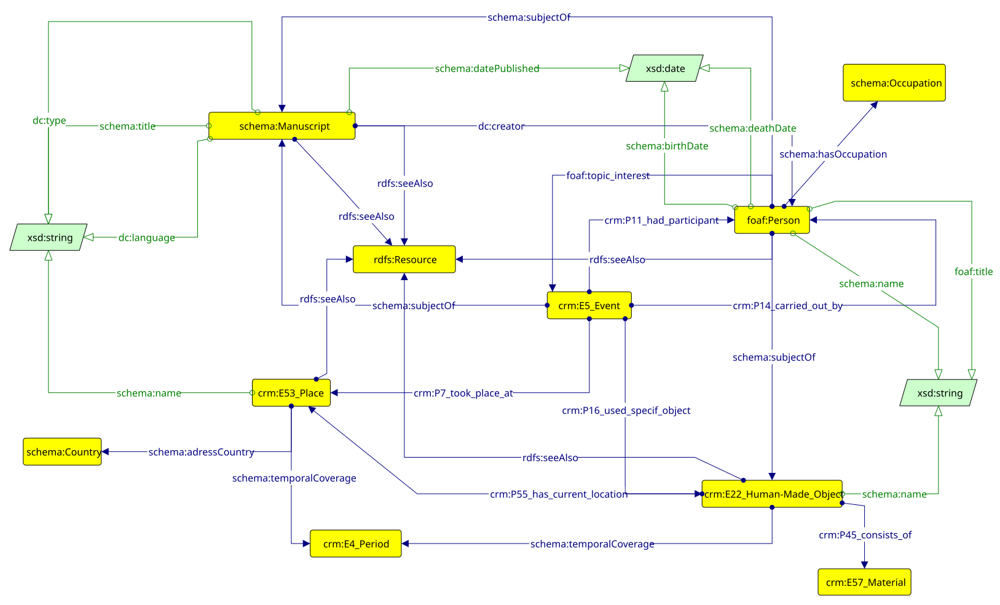
XML/TEI Document
After selecting the 11 entities, I copied the text from the Coronation section and a few paragraphs from the Memory and Historiography and Appearance and Iconography sections into an XML/TEI document. I began an initial phase of marking up the 11 entities within the document.
After establishing the conceptual model, I enriched my XML/TEI document with lists of these entities, categorized into people, places, literary works, and artistic objects; I added significant metadata for each object; finally, I created a list of relationships, linking the entities to one another and to the central event.
Click below to download the complete XML/TEI transcription document.
See XML/TEIXML to HTML Document
After completing the XML/TEI file, I transformed it into an HTML file.
To do this, I first created an XSLT file, then processed the XML and XSLT files using a Python script to generate the final HTML output.
By clicking the buttons below, you can view the XSLT file, the Python script, and the final HTML.
XML to RDF Document
Finally, I created a Python script to take the entities marked in the XML/TEI file and organize them into a knowledge graph structured according to the RDF model.
By clicking the buttons below, you can view the Python file and the Turtle file generated by running the script.
Using the free web service RDF Grapher, I transformed the Turtle file into a visual graph of nodes and edges, in order to visually see the relationships between the selected entities.
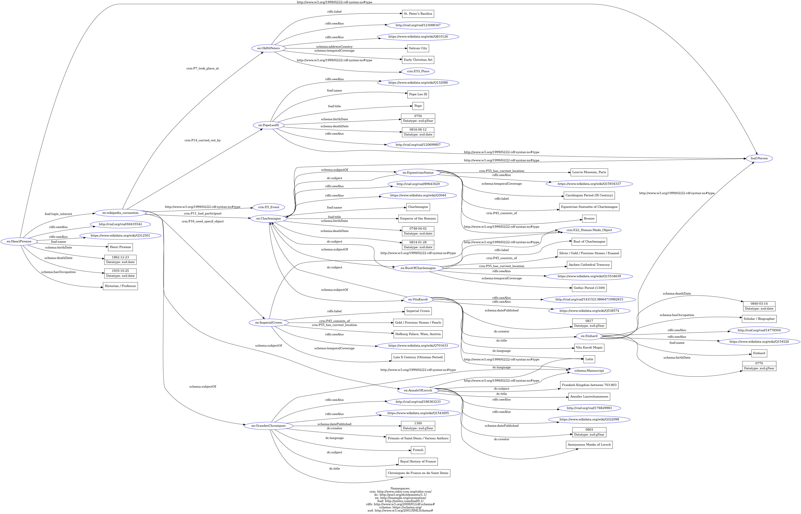
Tools and Bibliography
Tools and Languages:
- XML/TEI
- XSLT
- Python 3.14
- RDF
- HTML
- CSS
- JavaScript
- Graphoo
- Canva
- RDF Grapher
- Visual Studio Code
- GitHub
- Schema.org
- FOAF
- Dublin Core
- CIDOC CRM
- RDF schema
Sources for the text:
- Charlemagne Wikipedia page
- Pope Leo III Wikipedia page
- Einhard Wikipedia page
- Henri Pirenne Wikipedia page
- Old St. Peter’s Basilica Wikipedia page
- Vita Karoli Magni Wikipedia page
- Annales Laureshamenses Wikipedia page
- Grandes Chroniques de France Wikipedia page
- Equestrian Statue of Charlemagne Wikipedia page
- Bust of Charlemagne Wikipedia page
- Imperial Crown Wikipedia page